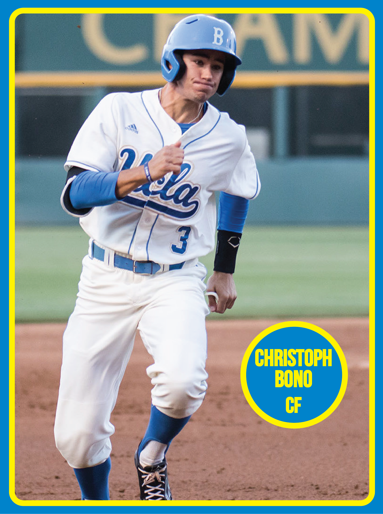

The Bruins have a lot to replace: their top two starting pitchers, their top-three hitters and a closer who established himself as the best in NCAA history. They were also dealt a huge blow when starting catcher Darrell Miller Jr., was ruled out for the season after labrum surgery.
The biggest question mark for coach John Savage is about who will play catcher. The competition involves two inexperienced options: freshman Jake Hirabayashi, a converted infielder who began catching in the fall and redshirt freshman Daniel Rosica, a walk-on who was brought in last year as a bullpen catcher. Having worked in the bullpen all of last season, Rosica has the upper hand in terms of knowing the Bruins’ system but Hirabayashi is a good athlete who’s been learning quickly, Savage said.
“It’s going to be challenging, for sure, but at the same time we are going to win, and we are going to win with those guys,” Savage said. “Our mindset is that, it’s plain and simple.”
Around the rest of the field, the Bruins are much more prepared to deal with their other losses. Here’s a breakdown of each position group.
In shortstop Kevin Kramer and third baseman Chris Keck, UCLA loses not just two of its best hitters but also the left side of its infield. It will be tough to replace those two, but the Bruins must move forward.
They’ve shifted junior Luke Persico from first base to third base, where Savage said he’s improved his hands and become a solid fielder. The shift could help turn the talented Persico into a high-level prospect, as third base provides more positional value. Set to bat either third or fourth in the lineup, Persico showed off some power in the Cape League last summer with three home runs.
Sophomore Nick Valaika is out until March 1 after undergoing surgery on the hamate bone in his right hand, but when he returns, he’ll play shortstop. That will move senior Trent Chatterton, who will fill in for Valaika at short to start the season, back to second base, where he played last year. Chatterton is a good fielder, but Savage said he thinks his range is better suited for second. At the plate, the 5-foot-8 infielder should be a solid piece at the back end of the lineup – he has steadily improved his slugging each year at UCLA.
While Chatterton is at short early on, versatile senior Brett Urabe will handle second base. Urabe has never seen consistent starting time for the Bruins but he’s a good athlete who often serves as a late-game replacement.
Sophomore Sean Bouchard will start at first. He’s transitioning from third base because the coaching staff felt more comfortable defensively with Persico at the hot corner. The 6-foot-3 Bouchard will bring to the lineup the power that made him a prized prospect coming out of high school – No. 75 among high schoolers in 2014, according to Perfect Game.
Although the Bruins lost talented hitter Ty Moore, Savage said he thinks they have one of the best outfield groups in the nation. That group includes toolsy players in junior Brett Stephens, redshirt senior Christoph Bono, redshirt senior Eric Filia, junior Kort Peterson and freshman Daniel Amaral.
“It’s loaded with ability: runners, guys that can hit, guys that can go cover ground, guys that have some power,” Savage said. “We think we have five legitimate outifelders.”
Stephens, who will start in left, contributed heavily on last year’s team, hitting .298 with a .382 on-base percentage, and will bat at the top of the lineup this season. He’s a solid outfielder with a polished hitting profile.
In center, Bono excels as a fielder He’ll slot in around the bottom third of the order but he has raised his average each of the past three years.
Filia represents a huge boost to the program in his return after two years away – one for injury, the other for academic suspension. He’s a tremendous hitter who led the 2013 national title team in hitting. He’ll bat either third or fourth and anchor the lineup.
Peterson is plenty capable of playing the outfield but he’ll start at designated hitter because the Bruins have such a wealth of talent.
The Bruins sustained two huge losses in the rotation, with both their Friday and Saturday starters heading to professional baseball. James Kaprielian, who made the All-Pac-12 First Team each of the past two seasons, was picked 14th in the MLB draft by the New York Yankees and Grant Watson, UCLA’s all-time leader in innings pitched, headed to the San Francisco Giants in the 16th round.
That said, John Savage feels confident the Bruins can replace those two. Junior righty Grant Dyer, who made the all-conference first team with a 1.83 ERA as a setup man last year, will move from the bullpen into the Friday role. Dyer throws in the mid- 90s with a curveball that Savage said is already major-league average. The next step for him will be to develop his changeup.
“Dyer’s got swing and miss stuff,” Savage said. “His strikeout ratio has always been high, and that’s always been a big deal. I think you’ve got to strike people out on Friday night.”
Savage said he thinks the Bruins have two Friday night starters. The second one, sophomore Griffin Canning, will pitch on Saturdays. Canning earned second-team Freshman All-American honors last year from Baseball America, producing a 2.97 ERA primarily as a Sunday starter. He brings a four-pitch mix with excellent command – he recorded a 26-to-1 strikeout-to-walk ratio in Pac-12 play.
On Sundays, freshman Kyle Molnar will take the ball for the Bruins. Molnar, a 6-foot- 2 righty, was Baseball America’s No. 53 prospect for the 2015 draft but decided to come to UCLA, where he’ll work with a three-pitch arsenal that includes low-90s velocity, a solid changeup and an improving breaking ball.
The Bruins will turn to two lefties, freshman Justin Hooper and redshirt junior Hunter Virant, to start midweek games. Hooper boasts an incredibly high ceiling. The No. 39 prospect in Baseball America's 2015 draft rankings – he’s 6-foot-7 and works in the mid-90s with his fastball. Virant got four Sunday starts under his belt last year after Canning went down with an injury. The lanky 6-foot-4 pitcher was highly touted coming out of high school, but hasn’t yet had the type of success expected of him at UCLA.
The best closer in college history, David Berg, is gone, and the Bruins’ All-Pac-12 first-team setup man Dyer has moved to the rotation.
But UCLA is in good position to reload this year and, like almost every Savage team, feature a strong pen. Savage will entrust the closing duties to freshman Brian Gadsby, who displays the same sidearm action as Berg, as well as two other arm slots.
Berg had unprecedented success in college but, from an objective standpoint, you could make the argument Gadsby is a more talented arm. He’s a prep football standout who throws harder than Berg, and Savage thinks he’s got a closer’s mindset.
The eighth inning is in good hands once again, as redshirt junior righty Tucker Forbes moves into the setup role from seventh-inning duties. At 6-foot-8, Forbes presents problems for hitters with the downhill plane on his low-90s fastball. He struck out a team-leading 10.57 batters per nine innings.
Savage will utilize sophomore right-hander Jake Bird in the seventh and redshirt freshman Nathan Hadley in the sixth, each of whom throw around 90 miles per hour with intriguing off-speed pitches.

Junior right-hander Grant Dyer will be UCLA baseball's Friday night starter – a year removed from anchoring eighth innings for the Bruins. (Daily Bruin file photo)
Grant Dyer almost saw his baseball career end in the blink of an eye.
The incident occurred in 2012, during Dyer’s junior year at Dana Hills High School. Dyer, pitching at the time, ran toward first base to back up the tail end of a double play. Next thing he knew, the ball struck him in the face.
“(I) shattered everything, had to replace a bunch of bones with metal and stuff,” Dyer said. “I was off the map for almost a year … because they had to do all kinds of reconstructive surgeries. It was a long ordeal.”
Some doctors advised Dyer never to play baseball again, but Dyer never considered quitting. Even with his eye swollen shut, he still played catch in the backyard with his dad.
“I was pretty determined that I was going to come back,” Dyer said. “It was never really a question to me.”
After eight weeks, Dyer was finally medically cleared to play baseball again. After that, it was game on.
Dyer emerged as a standout high school pitching prospect in 2013, posting a 1.24 ERA in 62 innings pitched. He earned a scholarship offer from UCLA in April 2013 – his first scholarship offer – and took it right away.
“UCLA was my first offer, which was awesome, because that was my first choice,” Dyer said. “So that’s hard to beat.”
Less than three years after signing, Dyer is the No. 1 starting pitcher on the No. 9-ranked UCLA baseball team, slated to start the 2016 season opener Friday night against No. 16 North Carolina.
The junior right-hander said he’s personally surprised how it all turned out. If you’d asked him five years ago, he would never have thought he’d become UCLA’s No. 1 starter. Dyer will now follow in the paths of decorated former No. 1 starters James Kaprielian, Adam Plutko and Gerrit Cole – each of whom were selected in the first six rounds of the MLB draft.
“It (has been) kind of a surprise. I committed really late, my senior year,” Dyer said. “Once my injury happened, I focused more on pitching – that’s kind of where my future was.”
Pitching may be the occupation for Dyer’s future as well. In this offseason, his fastball velocity has jumped from the 88 to 91 miles per hour range to 91 to 93 miles per hour range, according to coach John Savage. Aside from that, Savage said that Dyer has a curveball that is already major-league ready right now.
“Dyer’s stuff has significantly jumped,” Savage said. “His fastball is plenty, (and) his curveball is major-league average. … Dyer’s curveball, you know, the biggest thing right now is just (finding out how to) catch it.”
Dyer follows the likes of Kaprielian and another former No. 1 starter for the Bruins – Rob Rasmussen – in that he’s transitioning from a bullpen role. Last year, Dyer was UCLA’s eighth-inning pitcher, or setup man, and earned First-Team All-Pac-12 honors with an ERA of 1.83 and a strikeout rate of 1.1 per inning.
“(Last year), we won 45 games, were the No. 1 seed in the country, and a lot of that had to do with our bullpen,” Savage said. “(Dyer) took a sizable leap last year. He was a closer pitching in the eighth (inning).”
But as good as Dyer was in his relief role, Savage said that he always knew Dyer would become a starter this season. The only reason Dyer wasn’t a starter last season, Savage said, was because UCLA had an overload of starting pitchers returning from the season before. Three of them – Kaprielian, Grant Watson and Cody Poteet – went on to be selected in the 2015 MLB draft.
“They were all the starters from the year prior, and they all came back,” Dyer said. “The role I fit best last year was setting up for (David Berg), which was good.”
What Savage sees for Dyer this year, however, is for him to be that go-to guy on Friday nights. Savage said that he needs an experienced, strikeout-throwing guy in series openers, and that Dyer offers both of those things. Plus, Dyer has experience of starting 11 Tuesday night games as a freshman.
“He’s just ready,” Savage said. “He pitched as well as anyone we have this fall and in January.”
If you ask Dyer, he’s been ready for this moment since the end of last season. He was on the losing end of UCLA’s season-ending loss to Maryland in the NCAA Tournament – his lone start of the 2015 season – and he wants to quell that memory as soon as possible.
“Everyone that was there feels it. It doesn’t go away,” Dyer said. “Especially, personally, to me, because I got the start that Monday game, that final game of the series. So it hit home pretty hard for me because we really wanted that one.”
Dyer will finally get his first chance to bounce back on Friday night.
UCLA Baseball Team: Grant Dyer

(Kelly Brennan/Daily Bruin senior staff)
When it came to replacing David Berg, arguably the greatest closer in NCAA history, coach John Savage had options. Berg is the only reliever to have won Pac-12 Pitcher of the Year, and he won it twice. He is also one of only three players to have earned All-Pac-12 honors four times.
Savage said that redshirt freshman Nathan Hadley, sophomore Jake Bird and redshirt junior Tucker Forbes could all close games. Those three will pitch the sixth, seventh and eighth respectively, setting up for true freshman Brian Gadsby in the ninth.
“We have guys with better stuff, bigger stuff, no question,” Savage said. “Gadsby’s just got kind of a winning pedigree. There’s something there. He kind of has some Berg mannerisms about him.”
The main comparison between Berg and Gadsby is their delivery. They both throw fastballs, sliders and changeups from a low arm slot. Gadsby also features two more arm slots – three-quarters and low three-quarters – and throws all three of his pitches from all three slots. Berg, on the other hand, called himself a one-trick pony because he sticks to just the submarine slot.
Berg will report to the Chicago Cubs minor league camp shortly,but he’s been spending time at Jackie Robinson Stadium in the meantime. Ever since Savage tagged Gadsby as the closer, Berg has taken an interest in his successor.
“I told (Gadsby) right away, I’m obviously here to help,” Berg said. “I’ve been in all the moments that he wants to be in, so he’s doing the smart thing which is talking to somebody who’s been there and has done what he wants to do.”
Gadsby says he’s texted Berg a few times to ask for advice, particularly in regards to the mental side of the game. Berg tells him to remain confident and remember that he’s been given the closer’s role for a reason.
BASEBALL: Outfielder Eric Filia gets second chance at stardom
As part of the process in transitioning to that new role, Gadsby consulted sports psychologist Ken Ravizza. The Bruins hired Ravizza in 2010 and he’s worked with teams at the collegiate and major league level for more than 20 years.
Ravizza and Gadsby met one-on-one to discuss ways the freshman can control the pressure and excitement of the ninth inning. Ravizza emphasized good breathing, following routines and making sure players have a focal point to visualize in order to calm down.
“The athletes are more receptive than ever,” Ravizza said. “They want an edge, you know, and I think the mental game is one place where you can get it.”
A crucial part of Gadsby’s mental game might not have even been developed on a baseball field. Savage called Gadsby a tremendous competitor, citing his success as a high school quarterback. Gadsby played four years of football at Crescenta Valley High School, throwing 40 touchdowns and winning a CIF championship in his senior year.
“When you’re playing both sports, for the most part you’re almost always in season,” Gadsby said. “Football is such a competitive sport. It’s toughness. You’re going head to head. You can’t be soft or scared, especially being the quarterback.”
Gadsby weighs 170 pounds, he’s 18 years old and he’s playing a premiere position on a team with a 235-pound Forbes and a 23-year-old Eric Filia. He’s unproven and untested. Nonetheless, he’s Savage’s guy for the final three outs.
“I just think he has the mindset to close,” Savage said. “I hope I’m right, but that’s how we’re gonna start.”
UCLA Baseball Team: Brian Gadsby

(Devin Le/Daily Bruin senior staff)
John Savage believes in second chances, but this decision wasn’t easy.
“I went back and forth,” the UCLA baseball coach said. “I didn’t really ask other people’s opinion. I didn’t go that direction, I basically used my experience.”
Night after night, Savage slept on it – running through the conversations he’d had with Eric Filia, considering whether the outfielder had learned from his mistake.
Savage decided he had. He decided to let Filia back into the UCLA program.
“I feel confident that he’s turned his life around,” Savage said. “He’s just more mature, he’s figured it out. He knows what’s at stake, as well. This is it, this could be his whole career.”
***
There might have been more impactful players on the 2013 UCLA team that won the baseball program’s first national championship, but there was no bigger star than Eric Filia.
Then a sophomore, Filia batted third and led the team with a .444 postseason average, driving in eight runs over five College World Series games to earn a spot on the All-CWS team.
ESPN cameras repeatedly fixated on his then-girlfriend throughout the tournament, turning her into somewhat of an internet celebrity and even earning her modeling offers.
Filia went 4-for-6 in the two games of the CWS final, adding a defensive gem in the first game when he tracked down a deep fly ball and hung on as he slammed into the right field wall.
His success wasn’t exactly a surprise. The lefty had pummeled pitchers for years.
BASEBALL: Freshman Brian Gadsby steps into shoes of legendary closer
As a freshman on varsity at Edison High School in Huntington Beach, California, Filia hit an even .500 – tying a school record set by 2000 National League MVP Jeff Kent – and garnered team MVP honors as the everyday center fielder.
It was not much longer until Filia was committed to the Bruins, telling the coaching staff that he wanted to be a part of the first UCLA team to win a national title. By the end of his sophomore season in Westwood, he had accomplished that goal.
In the wake of the title-clinching game, in which Filia knocked in five of the Bruins’ eight runs, his career path seemed to be shaping up nicely. He would cement his rising prospect stock in the prestigious Cape Cod Baseball League that summer, return to Jackie Robinson Stadium to star for the Bruins the next spring and become a high pick in the 2014 MLB Draft.

None of that happened.
Filia went 1-for-15 on the Cape before heading home with an injury to his right shoulder. He performed physical therapy throughout the fall, but it didn’t prevent him from needing labrum surgery. He was sidelined for all of the 2014 season.
That summer, instead of playing in a summer league, Filia took classes at UCLA. Toward the end of the summer, he was caught plagiarizing part of a philosophy paper.
Filia was suspended from UCLA for the 2014-2015 school year and ruled ineligible for the 2015 season. From a baseball perspective, he had options: He could sign a free agent contract with a professional team or he could transfer to a National Association of Intercollegiate Athletics school and wait for the next draft.
Instead, he moved back to Huntington Beach to live with his great-aunt and worked a couple jobs – one at a kite store on the pier and one at a car wash. He eventually landed a gig as an in-house butler at the Playboy Mansion, conversing with guests and cleaning up after parties.
In light of his mistakes, Filia said he’s become very cognizant of his responsibility as a role model to his younger brothers, Michael and Bubba. He didn’t grow up with them – they lived in Irvine with his dad and stepmom, while he lived in Huntington Beach with his mom, grandma and great-aunt – but he saw them every other weekend.
Filia wants each of them to develop into better ballplayers than he is, but more importantly, Filia said, he wants to convey the importance of school.
So even after the academic suspension, Filia wanted to make sure he earned his degree from UCLA.
In January, Filia approached Savage about returning to the program to play in 2016. The coach was unsure at first whether he could put his faith in Filia, who, even as he carried the Bruins in 2013, had never been Savage’s most trustworthy player.
“He was kind of the funny guy, loose-cannon guy,” Savage said. “He’s kind of a white liar, a small liar.”
Although Savage was surprised and disappointed by Filia’s academic misstep, he wasn’t shocked, he said.
“He was walking a tightrope,” Savage said. “He was trending the wrong way, let’s put it that way.”
Back in Savage’s office before the 2015 season started, Filia had to convince the coach he had matured.
“I had to learn from it,” Filia said. “It really showed me who I had to be. … I just took it as, ‘Hey, get your head out of your butt.’”
After plenty of deliberation, Savage decided that Filia had done that.
“It’s a different presence about him, there’s a different trust factor,” Savage said. “He’s doing things right, all the little white lies are gone.”

The change in Filia goes beyond natural maturation, Savage said.
“What happened had to happen, I think he needed a left and a right,” Savage said, pantomiming a punch with each hand.
“We took something away from him that he values the most – other than, I’m sure, his family,” Savage said. “Baseball. Without baseball, this guy – I don’t know. This guy needs baseball.”
***
If Filia ever makes it to the big leagues – that’s his goal, and Savage thinks he can reach it – it will be because of his ability to hit.
“He’s one of those guys that has a magical bat, so to speak,” said hitting coach Rex Peters. “One of those kids that can just get out of bed and hit.” In his first at-bat last summer for the Kenosha Kingfish of the Northwoods League – almost two years since his last at-bat – Filia roped the first pitch he saw into center field for a single. He went on to hit .340 for the Kingfish.
“It felt like I never left,” Filia said. “Yeah, I was out of the game for two years but when I came back on the field, I just felt right.”
He looks right, too, when he strides into a batter’s box.
“When he steps in the box, you can tell he can hit, just by the way he steps in the box and the way he carries himself,” Peters said. “His confidence is very high. I don’t think there’s a pitcher out there that he doesn’t think he can hit.”
Peters said Filia has more natural hitting ability than all but two players he’s ever coached – one is major leaguer Daniel Descalso, the other a 10-year minor leaguer. Former Edison coach Steve Lambright said he’s never had a better hitter in his 23 years of coaching.
“Right now, if you took a poll of all the area scouts in our area that are watching Filia, they’re seeing the same thing I am,” Savage said. “I mean, this dude can hit. This isn’t ‘Oh, he’s got a good swing.’ No, this dude can hit.”
College baseball has changed since Filia last played – the NCAA introduced new baseballs last year, pulling the sport out of a so-called dead-ball era and raising offensive statistics significantly.
“You’re going to see some numbers from Filia – knock on wood – I think he’s going to catch a lot of people off guard,” Savage said. “I think he’s one of the best hitters in college baseball and people are going to find out this year.”
Filia, who stands to benefit from the new offensive environment, has changed, too.
Whereas the 2013 team saw Filia as a jokester, Savage said, the 2016 Bruins look up to him.
“Even though he’s not labeled as a captain, his leadership qualities seem to be off the charts,” Savage said. “He’s a much better practice player, he plays harder. There’s no agendas. There’s no underlying fakeness to it. It’s legitimate.”
UCLA Baseball Team: Tucker Forbes